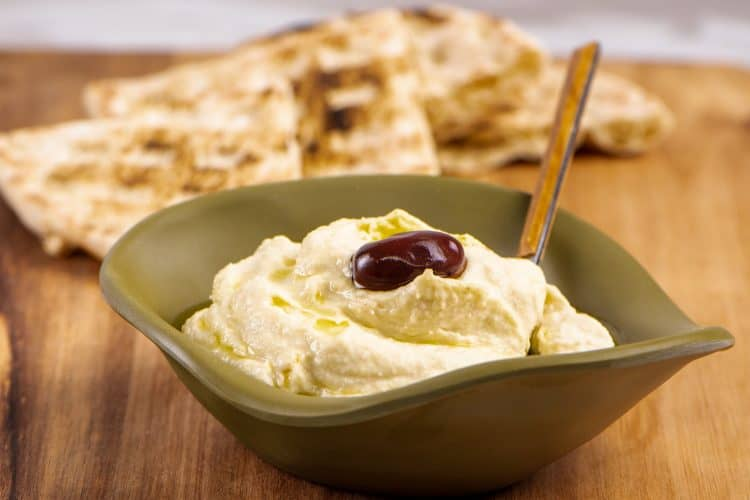

Taramasalata Dip

Summary
Taramasalata (or greek fish roe) dip is a traditional greek dip for serving with pita bread as an appertiser.
Description
Taramasalata (sometimes spelt taramosalata) is a delicious fish roe based dip made of salted and cured roe of cod or carp and sometimes, even grey mullet or bottarga. It is a velvety smooth dip that is mixed with olive oil and lemon juice and added to a starch base, which can be either bread of potatoes.
Ingredients
- 100g white tarama (fish roe)
- 300g white stale bread, crust removed, soaked in water and squeezed
- 175ml olive oil
- 2 lemons (juice)
- 1 medium red onion, grated
Method
- To prepare this delicious taramasalata recipe, start by soaking the bread (crust removed) in water and squeeze well to remove the excess water.
- In a food processor add the bread, grated onion and the tarama. Blend until the ingredients are mashed (like a pulp). Add half lemon juice and blend a little more. Pour in the olive oil gradually (just a little bit at a time) whilst blending, like making mayonnaise. Blend until the oil is incorporated and the mixture is smooth and creamy. Taste the taramasalata add some more lemon juice, according to preference and blend again.
- Serve this traditional Greek taramasalata dip with lots of home made pita breads aside.